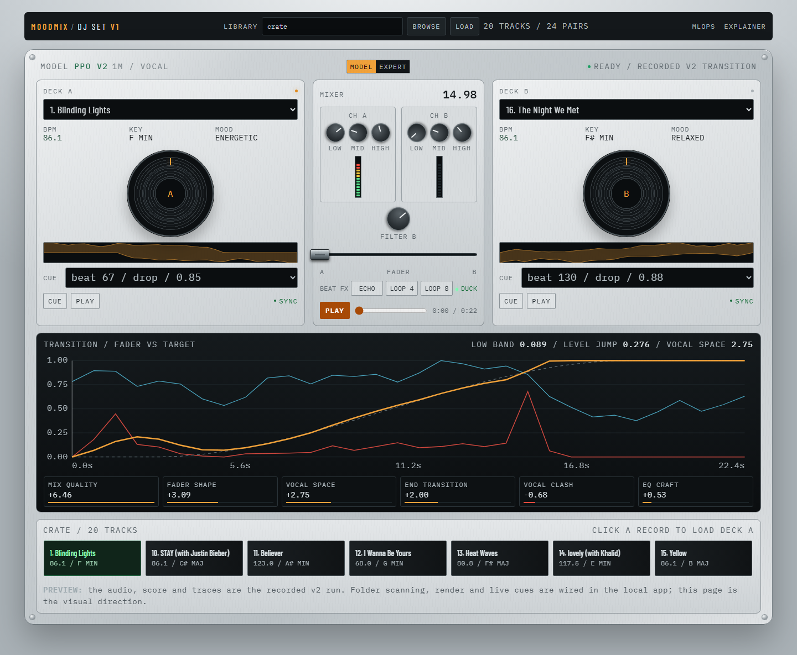
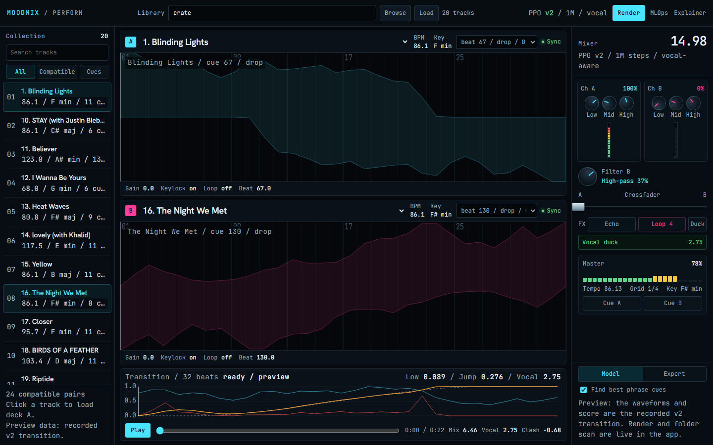
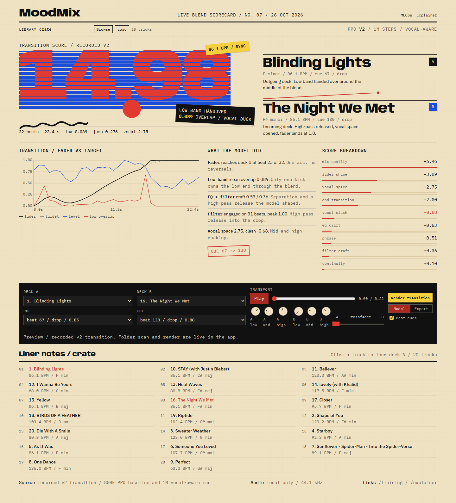
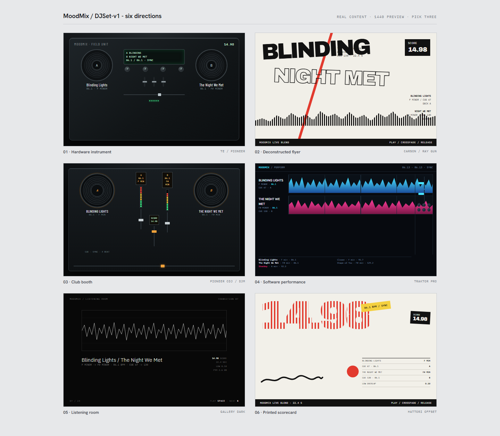

Same player, same 20-song crate, same Blinding Lights to The Night We Met v2 transition. Three different design languages, not three color skins. Open either the screenshot below or the live HTML demo at 1440px.

The mix is performed on a physical console. Silver aluminum faceplate, black CDJ-style jog wheels, dark LCD track displays, amber LEDs, channel strips and a built-in scope. The crate is a row of dark record sleeves.
Most literal reading of "an actual DJ set". Tactile, premium, dense. Best if the demo should feel like standing at a booth.
Open the live direction
The waveform is the hero. Two stacked deck lanes with beat grids and phrase marks, a collection browser, a mixer with EQ, filter, crossfader, FX and master metering. Built from the real v2 trace.
Feels like Traktor or rekordbox. Best if the point is watching the model shape the blend and reading the data quickly.
Open the live direction
The score is the cover. Straw paper, a monumental 14.98 in red and blue horizontal stripes, tilted yellow and black blocks, a hand-drawn wave, a printed transition chart, score table, liner-note crate and a black control strip.
Best as a shareable artifact or a portfolio piece about the model. It makes the result, not the tooling, the subject.
Open the live directionThe other three cards are the Carson deconstructed flyer, the black Pioneer booth and the Gallery Dark listening room. Say the word and I can develop one instead.
